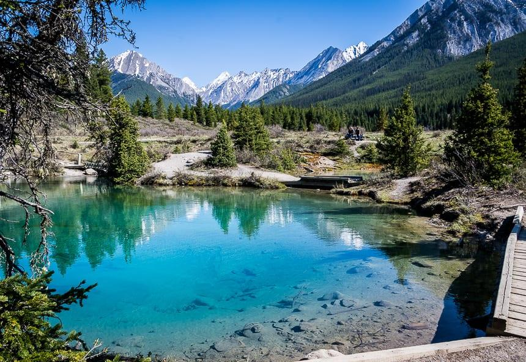

← 존스턴 캐년
🥾 Ink Pots
Johnston Canyon
⭐ 에메랄드빛 샘과 초원을 만나는 존스턴 캐년의 숨은 명소

📅 우리 일정
Day 2 (시간과 체력이 충분할 경우)
🏞 기대 풍경
💧 에메랄드빛 자연 용천수
🌿 넓은 초원과 평화로운 풍경
🏔 뒤로 펼쳐지는 로키 산맥
🦌 야생동물을 만날 가능성
📸 존스턴 캐년 최고의 힐링 포인트
📏 기본 정보
🚶 걷는 거리
왕복 11.7km
⏱ 걷는 시간
약 4~5시간
💪 난이도
보통
📈 고도차
약 335m
🚻 편의시설
✔ 화장실 (트레일 입구)
✔ 주차장
✖ 식수 없음
✖ 매점 및 카페 없음
🎒 준비물
👟 트레킹화 또는 미끄럽지 않은 운동화
💧 충분한 물
🍫 간단한 간식
🧥 바람막이
🧢 모자 및 선크림
💡 여행 Tip
✔ Ink Pots는 Johnston Canyon을 지나 더 안쪽에 있는 천연 용천수입니다.
✔ Upper Falls 이후부터는 방문객이 크게 줄어 한적한 트레킹을 즐길 수 있습니다.
✔ 긴 코스이므로 출발 전 물과 간식을 충분히 준비하세요.
✔ 돌아오는 길까지 체력을 고려하여 무리하지 않는 것이 좋습니다.
📍 Google Maps
🥾 트래킹 코스 보기
← 존스턴 캐년